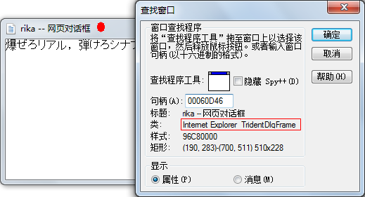

随着时间的推移，我们终于不再满足于只控制自己浏览器控件内部的DOM了，我们希望能够找到用户界面上的任意一个存在的DOM并且控制之。
OK，下面就介绍一下具体的方法，无图无真相，我们上一枚效果图。
首先点击页面上的按钮“showModelessDialog”弹出rika的网页对话框。
然后点击程序里的按钮“点我获取rika的body”。
程序执行后自动寻找到弹出的网页对话框，然后获取DOM，并且吧body.outerHTML show出来。
啦啦啦，下面是源码，我们一边看源码一边说：
MiscellaneaSourceCode3/Unit1.pas
第7行，记得加上MsHTML和ActiveX。
第10行，声明一个函数TObjectFromLResult。
第65行，FindWindow获取弹窗的句柄。
第72行，注意，我们需要用该句柄的子句柄，才能获取到DOM。
第73行，调用函数，传入句柄，返回IHTMLDocument2接口。
第40行，载入一个叫Oleacc的DLL。我们需要用到它提供的方法。
第42行，用GetProcAddress从DLL内找到我们要的方法，赋值给ObjectFromLResult。
第46行，注册一个消息，用于获取HTML对象。
第47行，向那个句柄所代表的窗口发送这条消息，这样它就把它的HTML对象返回给我们了。
第48行，利用之前的ObjectFromLresult从返回值中找到IHTMLDocument2接口。大功告成。
来解释一下为什么要找子句柄，其实他们在Spy++下看是这个样子的。
当我们点击标题栏时找到的窗口。注意类名是Internet Explorer TridentDlgFrame。

当我们点击内部找到的窗口。注意类名是Internet Explorer Server。
不错，下面这个才是我们需要的句柄，下面这个正好是上面那个的子窗口。
PS.其实整天用Spy++各种偷窥电脑上窗口的类名和关系也是很有乐趣的。
再PS.因为这是个showModelessDialog，所以找一下子窗口就可以了。万一是window.open打开的新窗口，结构可没这么简单哦。